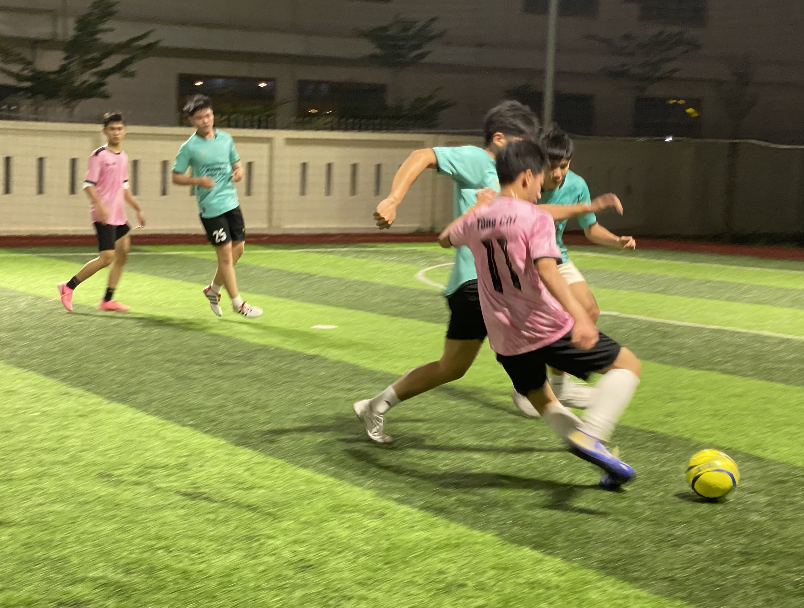
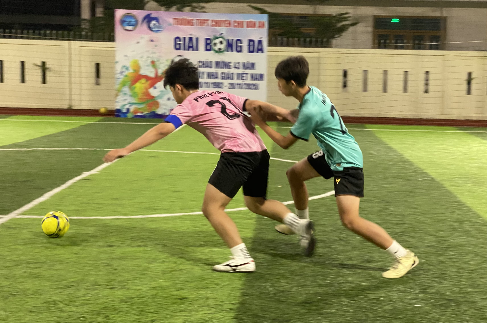
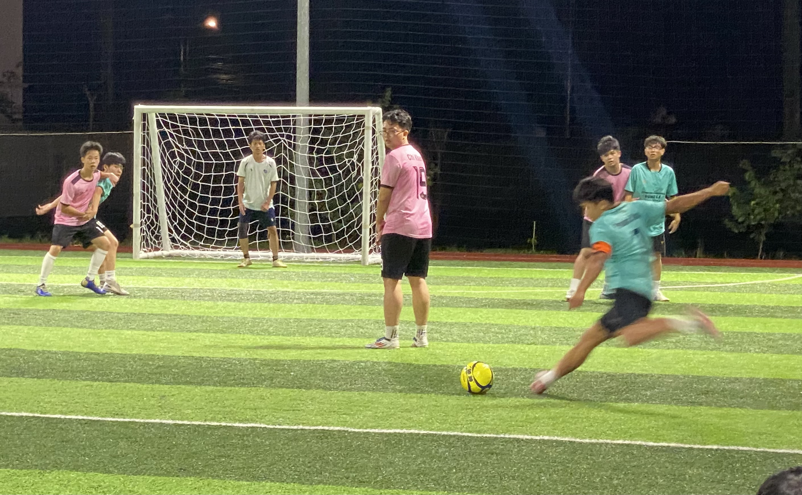
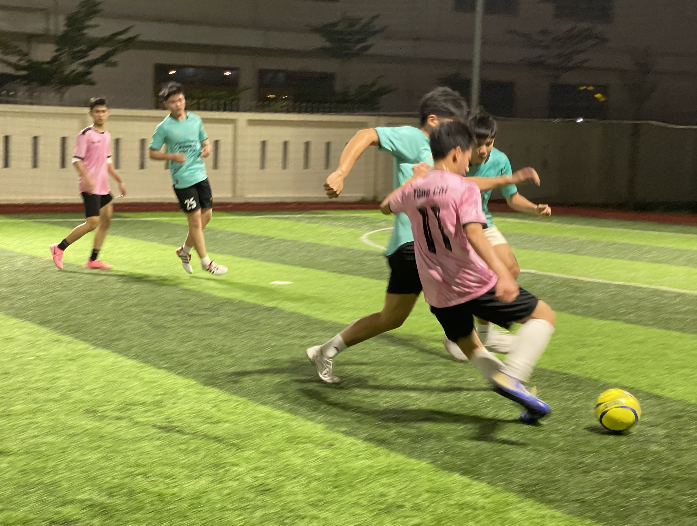
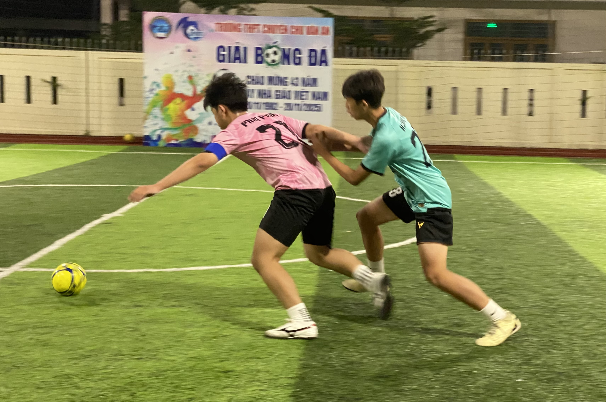
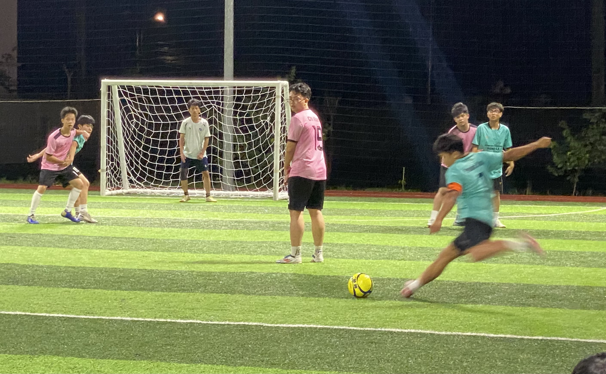

Về CLB Bóng đá C Spirit
CLB Bóng đá C Spirit – CVA Football Club là câu lạc bộ bóng đá của học sinh Trường THPT Chuyên Chu Văn An, được thành lập với mục tiêu tạo ra môi trường cho các cầu thủ trẻ phát triển kỹ năng bóng đá, tinh thần thể thao và sự đoàn kết trong tập thể học sinh.
 




